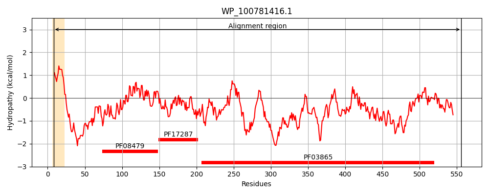
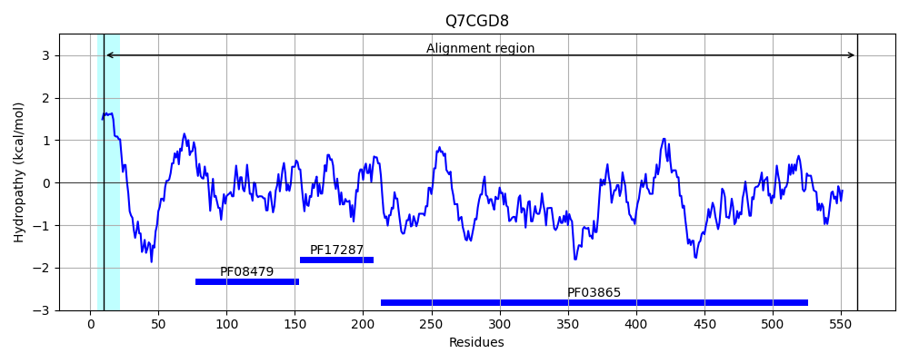
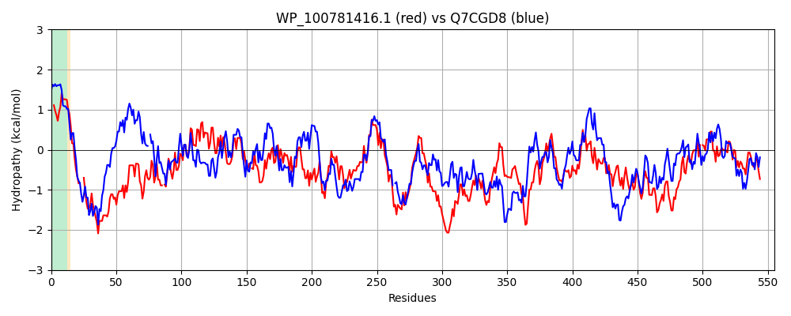

Hit Accession: Q7CGD8
Hit TCID: 1.B.20.1.11
Hit Description: gnl|BL_ORD_ID|15408 gnl|TC-DB|Q7CGD8|1.B.20.1.11 Outer membrane transporter CdiB OS=Yersinia pestis OX=632 GN=cdib PE=3 SV=1
Mach Len: 555
e:0.000000
Query TMS Count : 1
Hit TMS Count: 1
TMS-Overlap Score: 0.750000
Predicted Substrates:CHEBI:8526;protein polypeptide chain
BLAST Alignment:
Score: 933 , Bit scores: 363 bits, E-value: 1.4e-119, Alignment length: 555, Percentage identity: 37
Query: 8 LTGLLFITLAGTSAAGAAQLTT---SAHQTEQDKARQEALAPQQQDFQSSQQRVAPQGIPFPEETHCKLINRVDIDSDNQALTRKL-LAKTAQQAQGRCLGSEGIRLLAYTLQNELIAQGYITSLIDVPSQSLEQGMLRLTLHYGKVGAIGYA-DGSDTTRLWNSLPTSSGTILRLSDLEQGMANLQRLPGATAHMKLLPGQHEGESDIQIARSLAKKWQLGAWLDDAGSKASGRYQAGGALYLYDLTTLNDILYLSGGGDIEFNQHNDGNHNGSLYYSIPFGYWTLSAYGAYSQYRQQFNGNWSTMDYKSKNRYYSATLSRLLSHTRQQKTTADLRIAKSTSHYYFGGSELLVMRKQNPSWEFTLNHQHYFNKKIVDASIGIQRSVPWLSSTPTPEEKAGLYSPLSRIVHGNLQALMKFDATGDKFTWAPRLSAQFSPDKLASDNKFNIGSRWSVRGFDGENSLSGNQGWYWRNDFIWDLPTHERQFYLGADVGRLIG-ADLYQKGKVLSGAVSGLRGQLWSTQYDLFISTPLSKPDTFHSDALNMGFSLQWRY 556
+ G+L +A A+ A+L S HQ E+ +A +E LAP D + S I FP ET C +INR+ I S + L R L L + A QAQG+CLG++GI LL +QN L+ GY+T+ + P Q L G L L + GK+ + D + L+++ P +GT+L L D+EQG+ NLQR+P A+M L+PG GE+DI + K W+L A LDD+G++++GRYQ G L+L + +L+D+ Y+S GG ++ + + G +N + +YS+PFGYWT + Y Q G ++Y+ ++ + LSRLL QKTT + +S Y +E+ V R++ +W L H+H+ ++ I+DA I QR W + P EE G + LS+I+ N Q + F + + Q + L ++F+IG RWSVRGF+GE +L ++GW+ RND W LP + Y+G D G + G + Y G+ L+G+ G+RG + +T+YDLF PLSKP+ F +D+L +GF+L W Y
Sbjct: 10 VAGVLLKIVAIPDASYGAELAPVQQSIHQQERQRALEERLAPPTPDVRLSAPSAFFSRIIFPLETPCFVINRIKI-SGAEPLPRWLPLQRIADQAQGQCLGAKGINLLMSQMQNRLVDHGYVTTRVLAPQQDLNSGTLALNVVPGKIRGVELTPDSNRYVTLFSAFPARAGTLLDLRDIEQGLENLQRVPTVQANMVLIPGSAPGETDIILNWQQRKMWRLAASLDDSGTRSTGRYQGGATLFLDNPLSLSDLFYVSAGGALQ-RRGDKGTNNLTGHYSLPFGYWTAGMTASRYDYYQAVAGLNGDINYRGESENVAFQLSRLLHRNASQKTTFTYDVLTRSSKNYINDTEVEVQRRRTSAWRIGLQHRHFISQAILDAGISYQRGTRWFGAIPAQEEYFGEATALSKILRLNAQLDIPFVVMAQNLHYNLQYQRQSTNTPLTPQDQFSIGGRWSVRGFNGERTLIADRGWWVRNDIGWYLPLPGHELYVGVDYGEVGGRSGAYLLGRHLAGSAVGVRGNVLNTRYDLFAGKPLSKPNGFKTDSLAVGFNLNWLY 562 | Protein Hydropathy Plots: |
|---|
|  |  |
Pairwise Alignment-Hydropathy Plot:
|
|---|
|  |